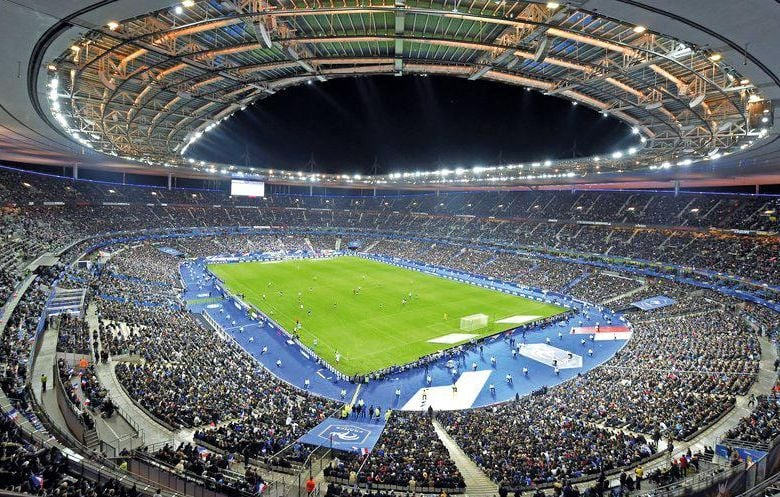
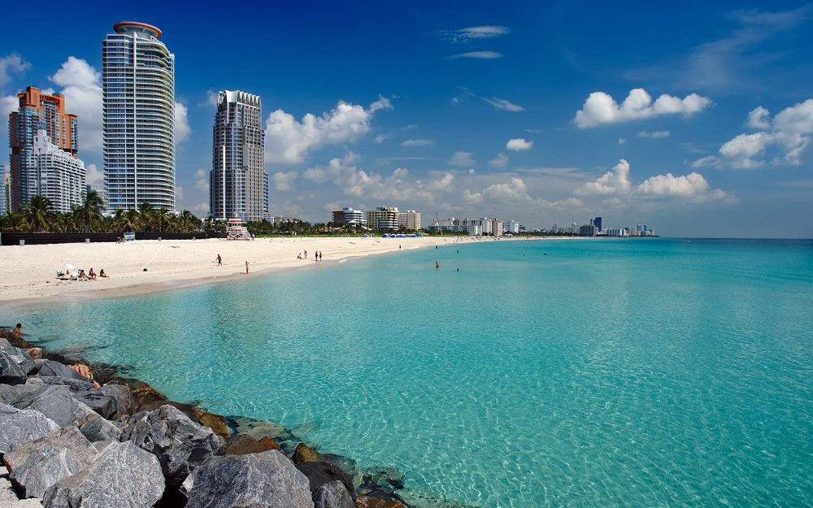

Sport
Pratique régulière : course, musculation et sports collectifs. Le sport m'apporte rigueur, endurance et esprit d'équipe.
Sports pratiqués
flavio@portfolio:~/a-propos$ cat profil.md
Profil & parcoursJe m'appelle Flavio Lodé et je me forme aux métiers des réseaux, des systèmes et de la cybersécurité. Actuellement en troisième année de BUT Réseaux et Télécommunications, parcours cybersécurité, je développe une approche concrète fondée sur la curiosité, la rigueur et l'envie de comprendre le fonctionnement des infrastructures.
Je souhaite approfondir l'administration, la supervision et la protection des environnements informatiques afin de construire mon projet professionnel dans le domaine de la cybersécurité.
Ce qui m'apporte de l'énergie, de la rigueur et de l'ouverture d'esprit — et qui se retrouve dans ma façon de travailler.

Pratique régulière : course, musculation et sports collectifs. Le sport m'apporte rigueur, endurance et esprit d'équipe.
Passionné des montagnes : le ski me permet de me ressourcer et d'acquérir concentration et prise de décision rapide.

Découvrir de nouveaux lieux et cultures — source d'inspiration pour mes projets et ouverture d'esprit.
Passion technique : infrastructure, sécurité et développement. J'aime assembler des solutions robustes et automatiser les processus.
Expériences en entreprise, formation et compétences : tout est réuni dans mon CV.